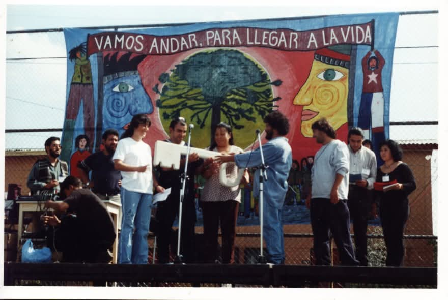

La Mística del Trabajo Territorial
Infancias, Navidad Popular y resistencia

La Navidad Popular: ningún niño sin celebrar en La Goya.
Cada diciembre, El Arca organizaba la Navidad Popular. No era una celebración cualquiera: era un acto de dignidad y rebeldía. Mientras las grandes tiendas vendían la felicidad empacada, el Jano y los compañeros iban de empresa en empresa buscando donaciones de dulces y otras cosas para los niños de la población.
"El Jano decía que la delincuencia no se combatía con más carabineros, sino con oportunidades —cuenta Carlos, ex monitor de El Arca—. Por eso los talleres no eran un pasatiempo: eran una alternativa real al destino que el sistema tenía preparado para nuestros niños."
La música, el arte, la comunicación: cada actividad era una semilla plantada en tierra fértil. De aquellos niños, algunos hoy son dirigentes sociales, comunicadores, educadores populares. La siembra dio frutos.